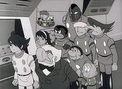

Cyborg 009
 De: La Frikipedia, la enciclopedia extremadamente seria.
De: La Frikipedia, la enciclopedia extremadamente seria.
.jpg/150px-muerto_3(2).jpg)
|
Muerto
El autor de este artículo, al parecer, se ha ido a una de sus citas al WC y suponemos que murió como el desdichado de aquí a la izquierda.
Así que en su memoria, no seas cabrón, ponle más chorradas al artículo.
|
| De la serie anime para todos:
|
| Cyborg 009
|
| 
|
| Un montón de juguetes sepsuales vivientes que solo quieren ser libres para follar con quien quieran.
|
|
| Género:
|
No tengo idea.
|
| Episodios:
|
Si contamos los que vale la pena mirar son solo 26.
|
| Autor del manga:
|
Don Ramón
|
| Publicación:
|
el manga hace 300 años, la serie en 2001.
|
| Publicado en:
|
El Imperio Kamikaze y el resto del mundo.
|
| Director del anime:
|
Quimera
|
| Transmitido en:
|
Televisión.
|
| Ovas:
|
¿Qué?
|
| Películas:
|
Una, pero es más vieja que los digimones.
|
| Notas
|
Estos frikis asustan un poco.
|
Trama
la historia trata sobre 9 personas autodenominadas cyborgs (de cyborgs no tienen nada)conformados por 2 negros sudafricanos,un argentino narigon, ivan el terrible, una chica que en su epoca era la mas buenorra, un viejo alcahuete y 2 enanos la cual todos ellos deben vencer a los marvados "quien sabe como se llamen pero me da flojera" a acabar con sus planes
Personajes
- Iván el Terrible / Cyborg 001: El primero de todos los androides 00, nació en Rusia con un sebero retrazo mental por lo que su padre decidió hacerle una lobotomía, la cuál le salió mal y le inhibió el crecimiento... ah, y le proporcionó poderes mentales. Fue capturado por Fantasma Negro a los pocos meses de sus modificaciones por causa de su incontenible pedofilia. Es un tipejo de 50 años aunque con apariencia de bebé por causa de los acontecimientos anteriores. El chico se piensa que es el jefe del grupo por lo que solo da órdenes, come, llora y caga.
- Jet "El Narigón" Link / Cyborg 002: Por si no sabes contar, te cuento que este tipo es el segundo de los androides 00. Era un pandillero que quedó desfigurado en una riña e intentó hacerce una reconstrucción facial pero los doctores que lo hicieron estaban drogados y el jóven terminó con un maltrecho aumento de busto en la nariz. Fantasma Negro lo capturó y lo modificó poniendole un par de culos super tira-pedos en los pies que le permiten volar a 5 veces la velocidad del sonido (ahora ya saben la causa de su peinado).
- Françoise / Cyborg 003: La única mujer del equipo. Inició en Francia como una pequeña putilla y acabó como una zorra profesional que en una semana ganaba el triple de lo que tu ganarías en un año de trabajo. Al ser capturada por Fantasma Negro este experimentó para darle visión de Rayos X ya que nuestro querido villano estaba muy interesado en poder ver los miembros de sus científicos. Actualmente esta chica solo sirve para cuidar a 001 y limpiar sus desechos.
- Albert Einstein Heinrich / Cyborg 004: Un nazi que quedó hecho mierda en un bombardeo durante la Segunda Guerra Mundial cuando intentaba violarse a una judía. La organización de Fantasma Negro juntó sus pedazos y después de "jugar" con ellos lo reconstruyeron. Es el cyborg con más modificaciones, las cuales incluyen unos feos ojos de vidrio, grandes penes explosivos que puede lanzar desde sus rodillas y una ametralladora lanza-condones en su mano derecha. Naturalmente es el que está mejor armado, como buen alemán hijoputa que es.
- G-Junior / Cyborg 005: Un nativo americano que en sus días de júbilo se la pasaba fumando hierba, lo que lo lleva a pensar que tiene algún tipo de conección con la naturaleza. Se cree que es el hermano perdido y no registrado de Toro Sentado. Los científicos de Fantasma Negro le rellenaron la piel con una clase de semen metálico que le sirve de coraza y tiene 5.000 veces tu fuerza
(bueno, eso tampoco es un gran logro que digamos, ¿o no?).
-
Jackie Chang después de subir unos kilitos / Cyborg 006: Un chino piromaniaco que tenía su propio restaurante, pero en un intento por quemar vivos a todos sus clientes (por causa de las miserables propinas que estos dejaban) algo salió mal y terminó quemándose solo. Fantasma Negro lo capturó para remodelarlo, pero intentó escapar en varias ocaciones en una de las cuales se comió un lanzallamas (comprensible ya que habían transcurrido 4 horas desde la última vez que se alimentó). Su trabajo es abastecer al grupo con porquerías biscosas que él mismo llama con términos elegantes "comida".
- Cyborg 007: Su nombre nadie lo sabe más que él por causa de lo feo y ridículo que este es. Es un calvito megalómano que se cree actor y que puede crear y dirigir su propia obra
porno teatral. Por causa de sus habilidades para cambiar de forma sus "amigos" lo usan como carne de cañón y lo mandan a espiar a Fantasma Negro, pero el muy inútil nunca trae información importante y por eso siempre lo regañan.
-
Nelson Mandela Pyunma / Cyborg 008: Leyeron bien, el es el Nelson Mandela verdadero, el otro es un clon avejentado que lo suplantó cuando la organización Fantasma Negro lo capturó. Era un guerrillero nigeriano y pederasta que traficaba armas y drogas en su país natal, hasta que le metieron cinco tiros y esa fue la oportunidad para que la organización lo atrapara. Es el más inservible de todos en cuanto a sus poderes (modificaciones incluyen respirar bajo el agua) pero importante ya que por causa de sus "negocios" es la única fuente de ingresos del grupo de cyborgs.
- Joe Shimamura / Cyborg 009:El tátara tátara abuelo de Son Gokú, es japonés (se nota porque tiene ojos pequeños y rasgados) y es el último de los cyborgs 00, solo que después de él hay algunos más. Era un criminal juvenil que odiaba la religión, tanto que asesinó a un par de curas y trató de suicidarse en 2 ocaciones saltando al mar desde un risco. Fantasma Negro le dio la habilidad de moverse a la velocidad de la luz, cosa que de vez en cuando le produce eyaculación precoz. Es el verdadero jefe del grupo y el principal "cliente" de 003.
Autor(es):
- Michael-Myers
- Generibot
- Jose.burgos.370
- Fedexcba456
Frikipedia 2005-2016, Licencia
GFDL 1.2 - Extraído por FrikiLeaks